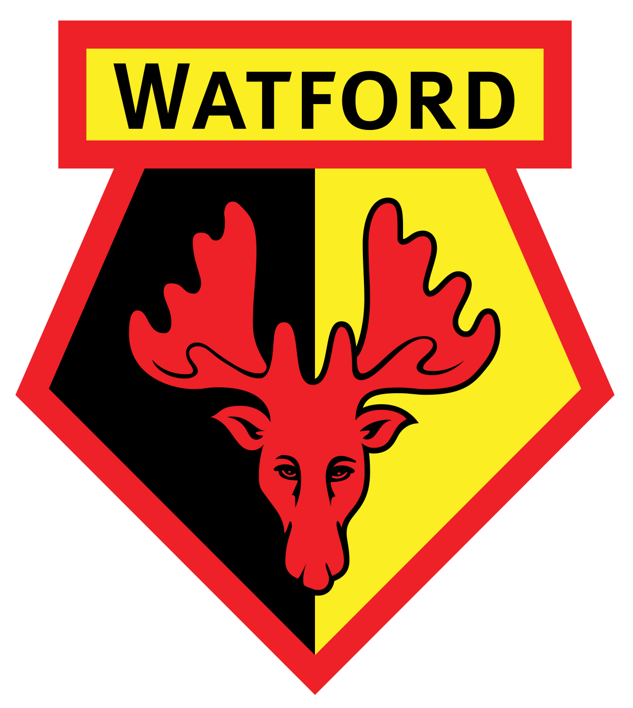
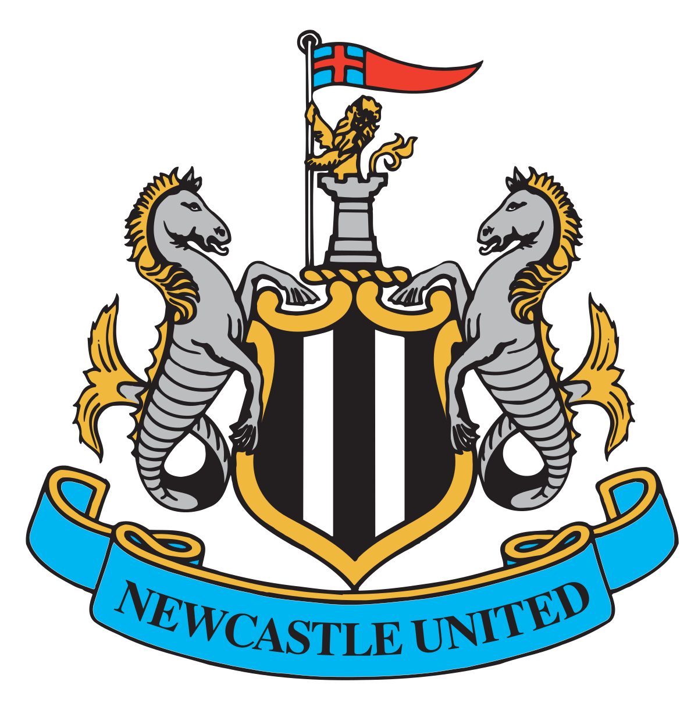

SoccerResultsPL

| Position | Club | Played | Won | Drawn | Lost | Points | Squads |
|---|---|---|---|---|---|---|---|
| 1. | Manchester City | 22 | 18 | 2 | 2 | 56 | Squad |
| 2. |  Liverpool Liverpool |
21 | 13 | 6 | 2 | 45 | Squad |
| 3. | Chelsea | 23 | 12 | 8 | 3 | 44 | Squad |
| 4. | 22 | 11 | 4 | 7 | 37 | Squad | |
| 5. |  Arsenal Arsenal |
20 | 11 | 2 | 7 | 35 | Squad |
| 6. |  Tottenham Hotspur Tottenham Hotspur |
18 | 10 | 3 | 5 | 33 | Squad |
| 7. | 20 | 9 | 5 | 6 | 32 | Squad | |
| 8. | 20 | 9 | 4 | 7 | 31 | Squad | |
| 9. | Brighton & Hove Albion | 21 | 6 | 11 | 4 | 29 | Squad |
| 10. |  Leicester City Leicester City |
18 | 7 | 4 | 7 | 25 | Squad |
| 11. | Crystal Palace | 21 | 5 | 9 | 7 | 24 | Squad |
| 12. | Southampton | 21 | 5 | 9 | 7 | 24 | Squad |
| 13. | Aston Villa | 20 | 7 | 2 | 11 | 23 | Squad |
| 14. | Brentford | 21 | 6 | 5 | 10 | 23 | Squad |
| 15. |  Leeds United Leeds United |
20 | 5 | 7 | 8 | 22 | Squad |
| 16. |  Everton Everton |
19 | 5 | 4 | 10 | 19 | Squad |
| 17. |  Watford | 19 | 4 | 2 | 13 | 14 | Squad |
| 18. | Norwich City | 21 | 3 | 4 | 14 | 13 | Squad |
| 19. |  Newcastle United | 20 | 1 | 9 | 10 | 12 | Squad |
| 20. | 17 | 1 | 8 | 8 | 11 | Squad |
Qualification - Champions League (Group Stage)
Qualification - Europa League (Group Stage)
Relegation - Championship